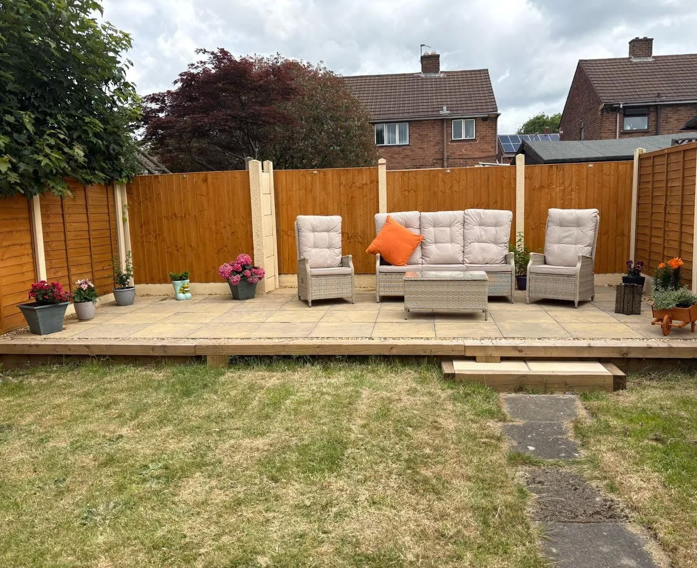

MSD LANDSCAPING · WOLVERHAMPTON
Patios, drainage
& driveways.
Garden and driveway work, from repairs to complete installations, in Wolverhampton and the West Midlands.
REPAIRS TO COMPLETE INSTALLS
Make more of
your outdoor space.
MSD Landscaping takes on patio, drainage, driveway and garden enquiries in Wolverhampton and the West Midlands. Get in touch about repairing what you have or planning a new layout.
About MSD Landscaping →

WHAT WE DO
Landscaping services
FROM THE PROJECT GALLERY
Paving and garden details
WOLVERHAMPTON · WEST MIDLANDS
Where we work.
Send us your postcode to check availability in your area.
See service areas →COMMON QUESTIONS
Planning the work
Can I ask about a small repair?
Yes. Send photos of the area and describe what needs attention so we can discuss the scope.
Can I discuss paving and drainage together?
Yes. Tell us where water currently collects and which surfaces you plan to change.
What should I include in an enquiry?
Your postcode, approximate measurements, access details and a few photos of the area.
LET’S TALK ABOUT YOUR PROJECT
Tell us what needs doing.
Share your postcode, approximate measurements and what you’d like to change. You can attach photos in WhatsApp before sending.